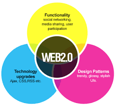

Web 2.0 refers to the second generation of the World Wide Web, characterized by user-generated content, social media, and interactive web applications.
Web 2.0 emphasizes collaboration, sharing, and user participation. It includes platforms like social networking sites, blogs, wikis, and multimedia sharing sites. Users can create and share content, connect with others, and engage in online communities.